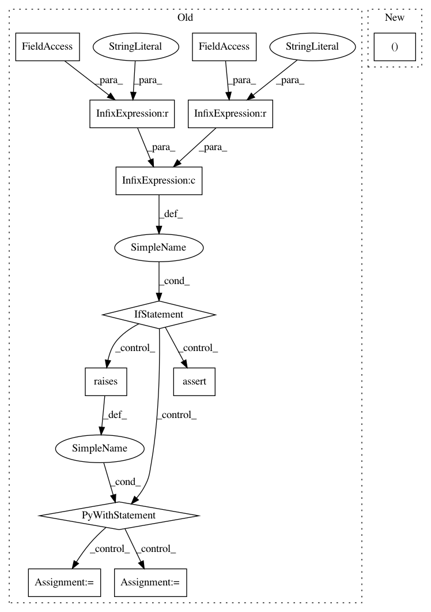

4eb7f60c15bed4e41feacbbc2561d468370bc2dd,kymatio/scattering2d/tests/test_torch_scattering2d.py,TestScatteringTorch2D,test_Scattering2D,#TestScatteringTorch2D#,218
Before Change
x = x.to(device)
scattering.to(device)
S = S.to(device)
if backend.name == "torch_skcuda" and device == "cpu":
with pytest.raises(TypeError) as ve:
Sg = scattering(x)
assert "CUDA" in ve.value.args[0]
else:
Sg = scattering(x)
assert torch.allclose(Sg, S)
@pytest.mark.parametrize("backend", backends)
def test_batch_shape_agnostic(self, backend):
J = 3
L = 8
After Change
@pytest.mark.parametrize("backend_device", backends_devices)
def test_Scattering2D(self, backend_device):
backend, device = backend_device
test_data_dir = os.path.dirname(__file__)
data = torch.load(os.path.join(test_data_dir, "test_data_2d.pt"))
In pattern: SUPERPATTERN
Frequency: 3
Non-data size: 12
Instances
Project Name: kymatio/kymatio
Commit Name: 4eb7f60c15bed4e41feacbbc2561d468370bc2dd
Time: 2020-02-18
Author: janden@flatironinstitute.org
File Name: kymatio/scattering2d/tests/test_torch_scattering2d.py
Class Name: TestScatteringTorch2D
Method Name: test_Scattering2D
Project Name: kymatio/kymatio
Commit Name: 4eb7f60c15bed4e41feacbbc2561d468370bc2dd
Time: 2020-02-18
Author: janden@flatironinstitute.org
File Name: kymatio/scattering2d/tests/test_torch_scattering2d.py
Class Name: TestModulus
Method Name: test_Modulus
Project Name: kymatio/kymatio
Commit Name: 4eb7f60c15bed4e41feacbbc2561d468370bc2dd
Time: 2020-02-18
Author: janden@flatironinstitute.org
File Name: kymatio/scattering2d/tests/test_torch_scattering2d.py
Class Name: TestSubsampleFourier
Method Name: test_SubsampleFourier